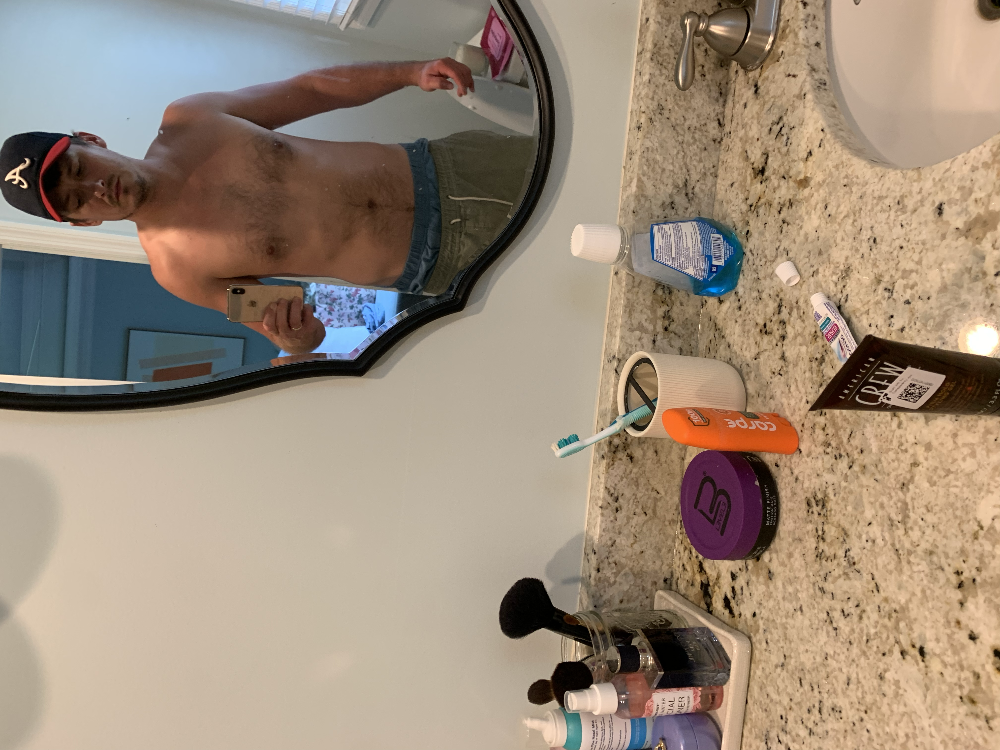
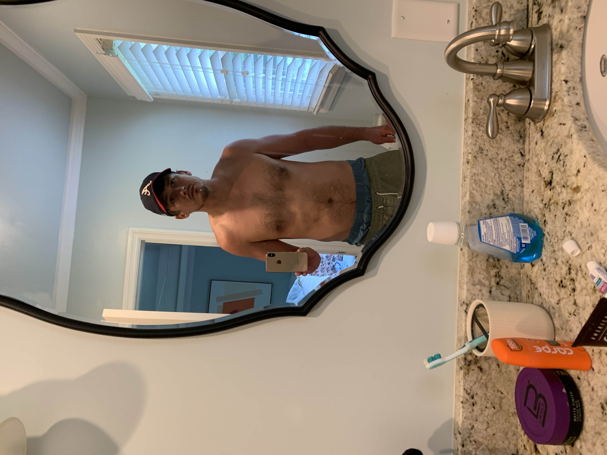
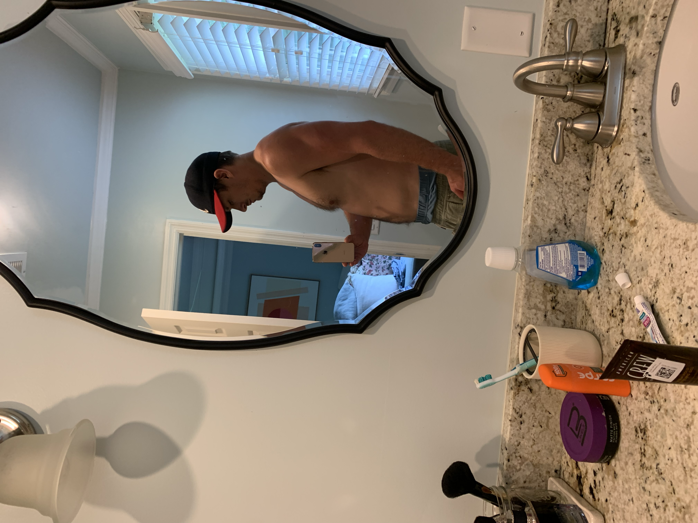

Squat headline updated 186→208 lb — first verified (non-reconstructed) data point for the lift, from 185×5 @ RPE 8 on 07-14. Deadlift headline is flagged, not trusted: it's still the plan-derived 248 estimate, but two real sets since (185×5 @ RPE 6 → 208; 195×5 → 219) both land well below it — see Observations.
| Pattern | Sets (28d) | Trend | Status |
|---|---|---|---|
| Squat | 8 | ↑ | ✓ |
| Hinge | 12 | ↑ | ✓ |
| Push | 17 | ↑ | ✓ |
| Pull | 20 | ↑ | ✓ |
| Carry | 0 | — | undertrained |
| Core | 2 | ↑ | very light |
Totals are well down from the 07-12 review (squat 18→8, hinge 18→12, push 30→17, pull 60→20, core 36→2) and carry work has dropped out entirely again. Two of the seven sessions in this window were jiu jitsu (0 lifting sets), which explains part of the drop — but re-add farmer/suitcase carries next week regardless.
Fatigue: moderate
Last session: 2026-08-03 (Hinge + Push) — 5 days ago
Last high-intensity session (RPE ≥ 8): 2026-07-22
Flagged for deload: yes
Jiu jitsu resumed this cycle after ~6 months off — live sparring 07-24, drilling-only 07-31. It's not in config.yaml's schedule and adds real fatigue cost on top of the 3 lifting days; factor it into how hard the lifting days get programmed.
Waist has crossed below the 36″ half-height threshold (36.5″, down from 38.5″ on 07-12) while scale weight has barely moved (-1 lb since the 07-13 fasted reading). Waist is the more sensitive signal right now — read this as real recomp, not noise.
Progress Photos



No daily-logs entries since 2026-07-15 — 24 days untracked. Protein target is 156 g/day (0.8 × 196 lb).
Can't correlate this cycle's weight/waist change with protein or sleep because there's no data to check against. Given the waist result is a genuinely good one, it'd be worth knowing what's driving it — resume daily logging to keep the recomp trend interpretable and repeatable.
- Retest the deadlift. The 248 lb headline is unverified and now contradicted by two real sets (208 @ RPE 6, 219 lb working set). Take an honest top set at RPE 8 next hinge day to get a real number.
- Take the deload. Due week of 08-10, right on schedule, and volume is already low — good timing to reduce load ~40% and cap intensity at RPE 6.
- Re-add carries. Zero carry sets in the last 28 days — back to undertrained after being fixed in the last review.
- Program around jiu jitsu. It's back in the mix (07-24, 07-31) and isn't in config.yaml — plan lifting days with that extra fatigue in mind.
- Restart daily logging. 24 days with no nutrition/sleep data; REVIEW is flying blind on what's driving the waist improvement.
- Nice waist result. 38.5″ → 36.5″ in ~4 weeks on nearly flat body weight — worth protecting whatever's working (likely the training consistency + jiu jitsu's return) once daily logging resumes and confirms it.